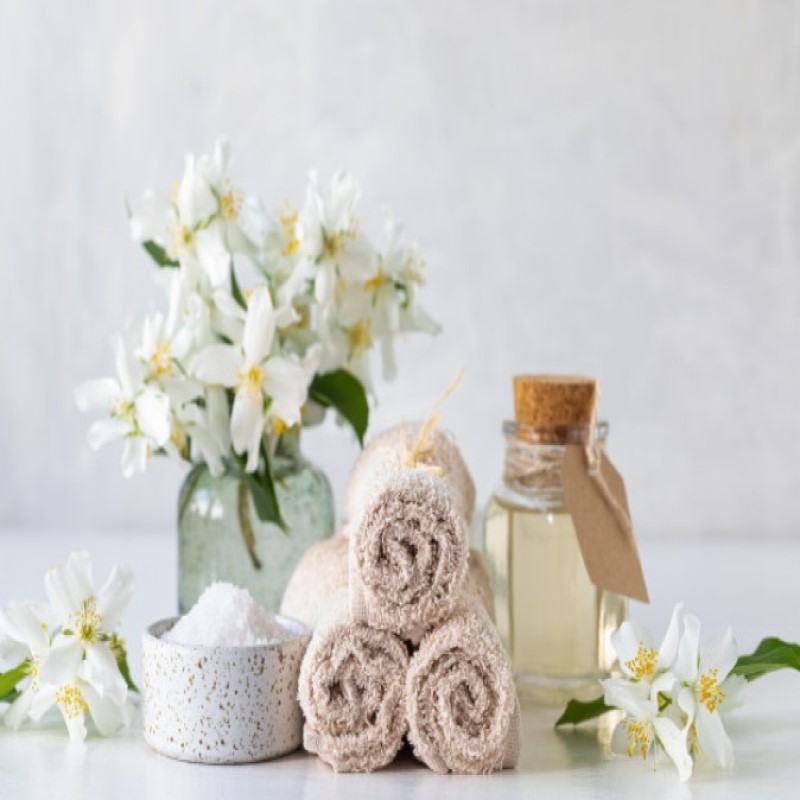
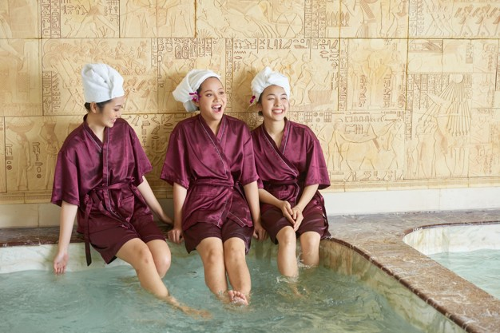

Sobre o Beauty Spa
O Beauty Spa é a maior rede de Spas Urbanos do país, com unidades em diversas cidades e estados. Nossas unidades estão localizadas em imóveis de rua, dentro de hotéis, condomínios, shoppings, salões e academias, sempre buscando nos aproximar de nossos clientes.
Nossa missão é fazer com que os clientes “sentirem-se bem”, em todos os aspectos e para isso buscamos entregar a nossos clientes muito mais do que o atendimento técnico de cada serviço, propiciando uma experiência única.
Com foco em serviços de bem-estar, relaxamento e estética, oferecemos mais de 25 tipos de terapias, desde massagens corporais, banhos, tratamentos estéticos avançados, Day Spas, além de procedimentos exclusivamente voltados para o público masculino, gestantes e pós-parto.
Nossa Localização
Quais são os benefícios de um tratamento de spa?
- 
- Tranquiliza sua mente, melhorarando as noites de sono
- Ajudar você a desligar o mundo exterior, incluindo as mídias sociais
- Melhorar a circulação sanguínea
- Ajude a aliviar a dor crônica, como artrite
- Descarte seu corpo de toxinas
- Ajuda a relaxar do stress diário
- Ajude a liberar a serotonina para melhorar os estados de ânimo
- Reduz a ansiedade e ajudar a digestão
- Ajude a nutrir e polir a pele e auxiliar na regeneração celular
- Rejuvenesça o corpo e a mente